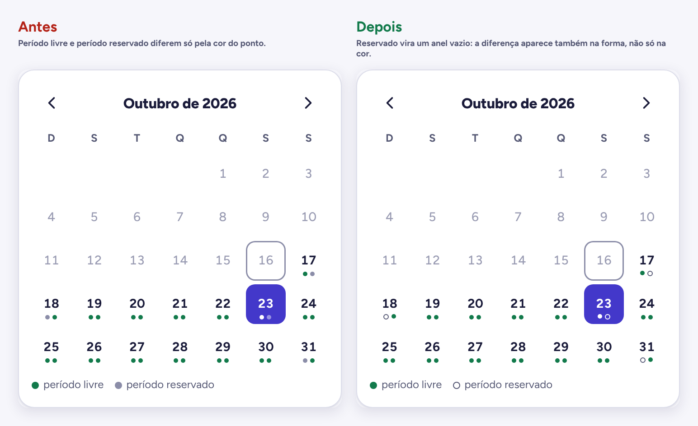
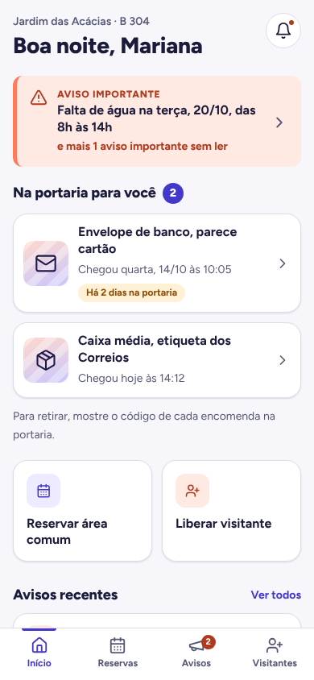
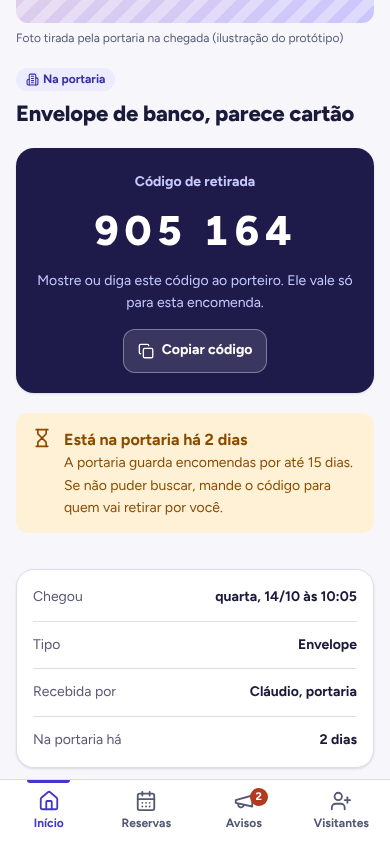
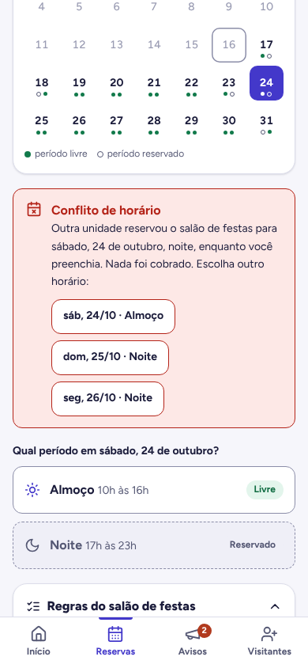
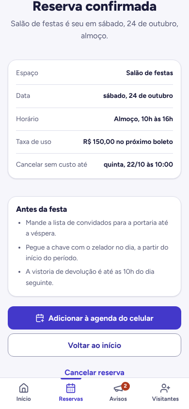
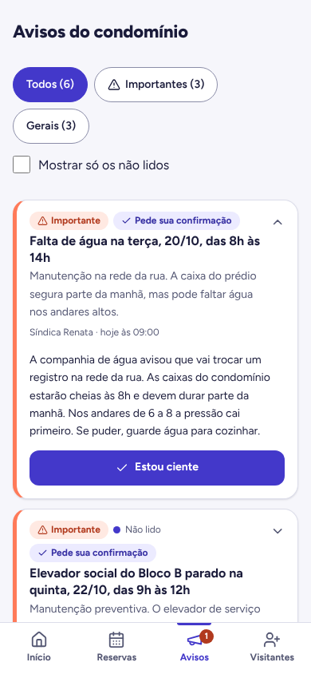
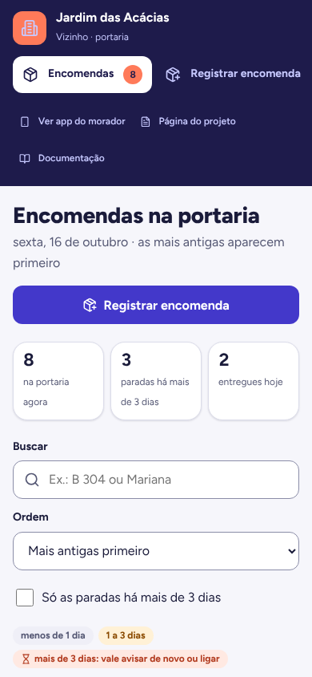

Vizinho
Encomenda que fica dias na portaria, salão reservado por duas famílias no mesmo sábado e aviso de falta de água perdido no grupo. Desenhei um app para o morador e um painel para o porteiro que resolvem as três coisas a partir do mesmo registro.

Contexto
Em muito prédio residencial, o porteiro anota a encomenda num caderno e interfona quando lembra. O morador descobre dias depois, e o pacote às vezes vai parar com a pessoa errada. A reserva do salão de festas é feita no mesmo caderno, e o conflito entre duas unidades só aparece no dia da festa. Já o aviso de falta de água divide espaço com venda de bolo no grupo de WhatsApp.
O Vizinho tem duas frentes que olham para o mesmo dado. O app do morador avisa quando chega algo e mostra o código de retirada, reserva áreas comuns com calendário e separa avisos importantes dos gerais. O painel da portaria registra a encomenda em poucos passos, mostra há quanto tempo cada uma está parada e entrega conferindo o código. Projeto conceitual, com dados fictícios.
No condomínio, a encomenda, a reserva do salão e os avisos importantes ainda dependem do caderno da portaria e de um grupo de WhatsApp onde tudo se mistura.O problema, em uma frase
Processo
Comecei pelo benchmark de produtos reais de condomínio: Townsq, uCondo, Superlógica e CondoConta, olhando só o que eles mostram publicamente. Incluí o concorrente informal que quase todo prédio usa de graça: o grupo de WhatsApp com o caderno da portaria. Os produtos completos juntam muitos módulos e têm foco forte na parte financeira; o WhatsApp é simples, mas mistura tudo e não guarda histórico confiável.
O caderno é rápido
Se registrar no painel demorar mais que anotar no papel, o porteiro volta ao caderno. O registro ficou com busca que aceita "b 304", tipo em um toque, foto opcional e o aviso já marcado.
Muitos módulos escondem o essencial
Apps completos juntam boleto, assembleia e reservas no mesmo lugar. O início do morador responde só uma pergunta: tem algo para mim na portaria?
Aviso importante some no grupo
No WhatsApp, falta de água e conversa ficam na mesma lista. Separei importante e geral, com destaque no início e confirmação de leitura.
Com o benchmark, montei duas proto-personas, marcadas como hipótese porque não entrevistei ninguém: a Mariana, moradora que passa o dia fora e silenciou o grupo do prédio, e o José, porteiro do turno da noite que não gosta de sistema com muita tela. A jornada da Mariana com uma encomenda mostrou onde o processo quebra: ninguém avisa, o turno seguinte não sabe do pacote e a retirada não deixa registro. Daí saíram os fluxos de encomenda (da chegada à retirada com código), reserva com conflito, avisos e visitante.
Com o protótipo pronto, fiz uma avaliação heurística com as 10 heurísticas de Nielsen. Encontrei 9 problemas e corrigi 8; o que sobrou (entregar várias encomendas da mesma unidade de uma vez) foi para os próximos passos. O mais grave, de severidade 3, estava no fluxo mais simples: às 18h40 dava para liberar um visitante "até 12h" de hoje, criando um passe que já nascia vencido. Agora os horários que passaram ficam desativados e o formulário recusa um horário vencido.

Solução
No app, a Mariana abre e vê na hora o que está esperando na portaria, cada encomenda com foto, há quanto tempo chegou e um código de 6 números para mostrar ao porteiro. A reserva mostra no calendário quais períodos estão livres antes de ela escolher, pede a leitura das regras e, se outra unidade reservar o mesmo horário enquanto ela preenche, explica o conflito e oferece os horários livres mais próximos. Os avisos importantes aparecem em destaque e pedem confirmação de leitura. No painel, o José busca a unidade digitando "b 304", registra e o aviso sai na hora; a lista mostra as encomendas da mais antiga para a mais nova, com as paradas há mais de 3 dias em coral, e a entrega só acontece com o código certo ou com nome e documento de quem retira.






Handoff
Para o produto sair do papel, o desenvolvimento precisa de mais do que telas bonitas. Entreguei:
- Tokens em variáveis CSS compartilhados pelas duas interfaces: cores, tipografia, espaço, raio e sombra, com contraste AA documentado.
- Estados de cada componente no protótipo: vazio, erro, conflito, sucesso e desfazer, todos navegáveis.
- Fluxos em diagrama da encomenda, reserva, avisos e visitante, mostrando onde as duas interfaces se encontram.
- Prints em 390 x 844 e 1440 x 900 e documentação do processo no repositório.
Resultado
- 9
- telas no protótipo
- 9
- problemas achados na heurística
- 8
- corrigidos
- 4
- produtos no benchmark
O próximo passo é testar com 5 pessoas: 3 moradores que recebem encomenda toda semana e 2 porteiros ou zeladores. Preparei 7 tarefas, como achar a encomenda e mostrar o código, reservar o salão e lidar com o conflito, e registrar uma caixa para o B 304 em menos de 30 segundos. Eu mediria a taxa de sucesso por tarefa e compararia o tempo de registro com o de anotar no caderno, que é o verdadeiro concorrente.
Aprendizados
- Dois usuários, um registro. Desenhar as duas pontas juntas me obrigou a definir o que passa entre elas, o código de retirada, antes de pensar nas telas.
- O concorrente é o caderno. Cada campo a mais é motivo para o porteiro voltar ao papel. Cortei até sobrar unidade, tipo e um botão.
- O óbvio também quebra. O único problema grave da avaliação estava no formulário de visitante, o fluxo que eu achava mais simples.
Entregas
App para mentor de concurso público acompanhar a turma: check-in de estudo por questões, ranking justo, simulado semanal e alerta de quem sumiu.